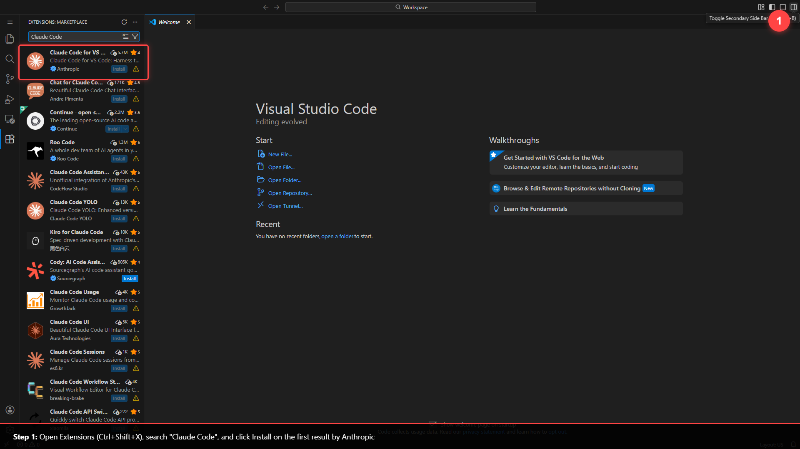

Seven small steps to get set up — mostly inside VS Code, no coding. Tick each one off as you go. If you ever get stuck, Claude itself will walk you through it.
claude terminal. Steps 3 & 5 match this.This is the one part you set up by hand — and once Claude Code is running, Claude can do almost everything after this for you. Three quick things:

Now that Claude Code is installed, you barely have to lift a finger. Paste this into the Claude Code chat — Claude does the whole install itself, and if it ever hits something only you can do (paste your key, click a button), it walks you through it one clear step at a time. (Have your license key ready — Step 2 below shows where to find it.)
You are setting up the CLO-OS Community plugin in my Claude Code for me. Do as much of this yourself as you possibly can — run the commands, install what's needed, check the results — and only hand a task to me when it's genuinely impossible for you to do it. My job should be near zero: ideally I only paste my license key and click a button or two. Verify every step actually worked before moving to the next. MY SETUP — read carefully: I'm in the Claude Code VS Code extension. You CANNOT type slash commands into my chat for me. When something can ONLY be done by me (a slash command, or a click), do NOT just dump a command and assume it ran — give me a clear, numbered "do this" with the exact text to paste or the exact thing to click, then STOP and wait for me to confirm. In the extension the plugin manager is a clickable panel: I open it by typing /plugin and then CLICKING "Manage Plugins" (it has a Plugins tab and a Marketplaces tab). Prefer guiding me through that panel with simple clicks over slash commands. Your standing rule for the whole process: try to do it yourself in the terminal first. If a terminal command fails, errors, or isn't available on my version, DON'T get stuck or make me debug — switch to the simplest path for me: walk me through the VS Code Manage Plugins panel step by step (or give me one exact line to paste), wait, and verify it worked. Always favor the option that needs the least from me. 1. NODE.JS — Run `node --version` yourself. If it's missing or older than v18, install the latest LTS for me (winget on Windows, Homebrew on macOS, or the right package manager for my OS) and confirm it works. Don't make me install anything you can install. 2. SKILLSTACK (the system that delivers the plugin) — First try it yourself in the terminal: claude plugin marketplace add https://github.com/SkillStacks/skillstack.git claude plugin install skillstack@skillstack-marketplace --scope user If that fails or isn't available, switch me to the VS Code panel: "type /plugin and click Manage Plugins" → Marketplaces tab → add https://github.com/SkillStacks/skillstack.git → Plugins tab → find "skillstack" → Install → choose "Install for you" → reload. Walk me one click at a time and wait. 3. LICENSE — Tell me when you're ready and I'll paste my Lemon Squeezy license key. Then activate it yourself (the /activate-license flow, or the SkillStack tools if you have them). Note the storefront URL and the two install commands it resolves to. 4. CLO-COMMUNITY — Install it. Try the terminal yourself first (claude plugin marketplace addthen claude plugin install clo-community@clo-os --scope user). If that can't run, switch me to the VS Code panel the same way: /plugin → Manage Plugins → Marketplaces tab → add the clo-os storefront URL → Plugins tab → find "clo-community" → Install → "Install for you" → reload. One step at a time, and verify. HOW THIS PLUGIN ARRIVES (handle these known snags so you don't stall): the clo-community npm package is only a tiny metadata stub — the real skills download from a short-lived git URL with a one-time token in it. Two things to watch for, and how to handle each WITHOUT making me debug: • If a safety/security check BLOCKS the git clone because the URL has a token in it, do NOT retry it or try to route around the block. Stop, hand me that ONE exact command in a code block, tell me to paste it into my own terminal, then wait and verify — that single paste is safe for me to run. • After install, confirm the plugin folder actually holds its skill files — not a ~1 KB stub, and not sitting inside a folder literally named "unknown". If the content landed under an "unknown" folder, move it into the correct versioned plugin folder (the path the registry looks for, like …/clo-community/ /) and reload so Claude Code can find the skills. 5. RELOAD & CONFIRM — Reload plugins so clo-community is active, then confirm to me that it's installed and enabled (its skills and commands show up). If you see a "duplicate hooks file detected" message, it's a known, non-blocking warning from the plugin — note it and keep going; it doesn't stop anything. After each step, tell me plainly whether it worked, or show me the error and exactly how you're fixing it. Start now with step 1.
When you subscribed through Lemon Squeezy, you were issued a license key — a line of letters and numbers like this:
Two places to find it:
noreply@lemonsqueezy.com). Your key is printed inside. Can't find it? Check spam, or search your inbox for "Chief Leverage Officer" or "license".What SkillStack is: the secure marketplace that delivers paid Claude Code plugins. You install it once, ever — after that, one login covers every CLO-OS plugin you own.
/plugin — a menu pops up. Click Manage Plugins (don't just press Enter). It opens with two tabs./reload-plugins. (If stuck: Ctrl+Shift+P / Cmd+Shift+P → "Reload Window.")Now hand SkillStack your key. In the same Claude session (panel or terminal), type:
When it asks for your key, paste the license key from Step 2 and press Enter. It points your computer at the SkillStack registry (automatic), confirms your key, recognizes it belongs to clo-community, and prints the exact two commands you'll use in Step 5.
Step 4 just printed two commands tailored to your account — use the ones it gave you (they'll look like the ones here).
/plugin and click Manage Plugins (same as Step 3)./activate-license printed — like the line below) and add it:/reload-plugins) to finish loading clo-community./activate-license printed straight into the chat:claude terminal, run the two commands it printed (like these) — choose "Install for you":/activate-license printed — they're tailored to your account. The ones above are just what they look like./plugin → Manage Plugins → Marketplaces tab → select the CLO-OS storefront → Enable auto-update.Onboarding runs a Business X-Ray that draws your business as a .drawio map (and your AI Employees draw more as you go). Two quick parts: install the app to open the maps, and connect the Draw.io MCP so Claude can draw and edit them for you.
Part A — Install Draw.io Desktop (the free app that opens, edits, and exports .drawio files locally, no browser or account):
...-windows-installer.exe for Windows, ...-universal.dmg for Mac, or the .deb / .AppImage for Linux..drawio file opens with a double-click.Part B — Connect the Draw.io MCP (lets Claude create and edit diagrams live, instead of just handing you a file). It's a standard custom connector at this URL:
/mcp, choose Add connector (HTTP), and paste the URL above.drawio tools now show up — say "draw this as a diagram" and Claude builds it in Draw.io.drawio tools load..drawio files in your workspace folders — nothing to upload.In your Claude session (panel or terminal), simply type:
The plugin runs a guided, five-phase setup — you just answer its questions:
| Phase | What happens |
|---|---|
| 1. Scaffold | Builds your workspace folders and settings |
| 2. Business X-Ray | Maps your business and finds where AI can take over real work |
| 3. Digital Assets | Interviews you for your voice, look, audience & methodology |
| 4. Connect tools | Wires up the apps you use (Notion, etc.) |
| 5. First skill | Builds a custom skill aimed at your #1 bottleneck |
Takes ~20–30 minutes. End state: a workspace built around your business, with your first AI Employee already running.
Fastest fix is to let Claude diagnose it live. Copy this, paste it into Claude Code, and add what you saw where it says [describe...].
I'm installing the CLO-OS Community plugin in Claude Code and I'm stuck. Here's what happened: [describe the error or what you see on screen]. Please help me fix it. Background on how this install works: - It uses SkillStack to deliver the plugin. I add the SkillStack marketplace (https://github.com/SkillStacks/skillstack.git), install the "skillstack" plugin, run /activate-license with my Lemon Squeezy license key, then install "clo-community@clo-os". - Node.js (v18+) is required because the plugin is delivered as an npm package. Known snags that have hit this install before — check whether any match: - The clo-community npm package is just a small stub; the real skills come from a short-lived git URL with a one-time token. If a clone with a token in the URL got blocked by a safety check, give me the one exact command to paste into my own terminal and verify it — don't keep retrying it yourself. - The skills can land in a folder named "unknown" instead of the versioned plugin folder. If so, move them into the versioned path the registry expects and reload. - A "duplicate hooks file detected" warning is known and non-blocking — it doesn't stop the install. Check anything you can — run node --version, look at my ~/.npmrc for the @skillstack registry line and auth token, and check whether the marketplace was added and the plugin is enabled (I can open it by typing /plugin and clicking "Manage Plugins"). Then explain the problem in plain English and give me the exact steps to fix it. You can't type slash commands for me, so tell me what to type and wait.
| What you see | The fix |
|---|---|
| A new command doesn't appear | You skipped a reload. Type /reload-plugins, or reload the window (Ctrl/Cmd+Shift+P → "Reload Window"). |
Install fails mentioning npm or node | Node.js isn't installed (Step 1, item 4). Install the LTS build from nodejs.org, restart VS Code, retry. |
| A 403 error on install | Your license isn't activated for this plugin yet. Run /activate-license again, paste your key, then retry. |
| "Key bound to other plugin" | That key is for a different product — each key activates one plugin. Re-check the key in your Lemon Squeezy email. |
| "Expired" or "Revoked" | Your subscription lapsed. Renew at My Orders, then run /activate-license again. |
| Skills don't show up after install | Close VS Code, delete the folder ~/.claude/plugins/cache, reopen, and install again. |
Install finishes but skills are missing, or you see a folder named unknown | The content landed in the wrong folder. Paste the "Stuck?" prompt above and ask Claude to move it from the unknown folder into the versioned plugin path the registry expects, then reload. |
| A clone or download is blocked / warns about a token in the URL | Expected — the plugin's skills ship from a one-time tokenized git URL. Paste the exact command Claude hands you into your own terminal, then let Claude verify. |
duplicate hooks file detected | Known, non-blocking warning — the plugin lists its hooks twice. It doesn't break the install; continue. |
/plugin not recognized | Claude Code is outdated. Update the extension (Extensions panel → Claude Code → update), reload, retry. |
/activate-license and paste it on each one. No new key per device.npm) downloads it. Install once from nodejs.org and never touch it again./skillstack:update-plugins./activate-license again.